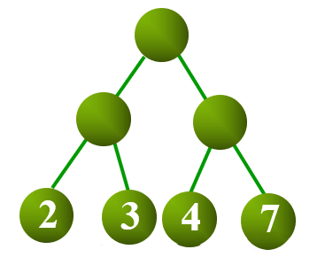
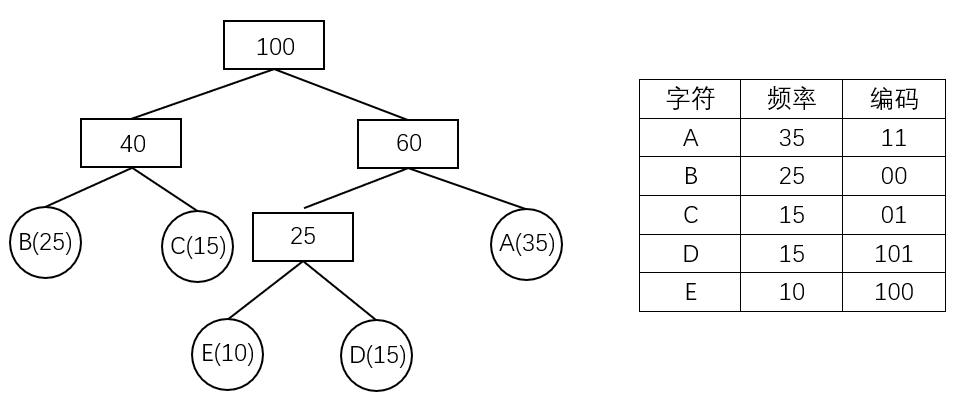

霍夫曼树
树的带权路径长度¶
设二叉树具有 个带权叶结点，从根结点到各叶结点的路径长度与相应叶节点权值的乘积之和称为 树的带权路径长度（Weighted Path Length of Tree，WPL）。
设 为二叉树地 个叶结点的权值， 为从根结点到第 个叶结点的路径长度，则 WPL 计算公式如下：

如上图所示，其 WPL 计算过程与结果如下：
结构¶
对于给定一组具有确定权值的叶结点，可以构造出不同的二叉树，其中，WPL 最小的二叉树 称为 霍夫曼树（Huffman Tree）。
对于霍夫曼树来说，其叶结点权值越小，离根越远，叶结点权值越大，离根越近，此外其仅有叶结点的度为 ，其他结点度均为 。
霍夫曼算法¶
霍夫曼算法用于构造一棵霍夫曼树，算法步骤如下：
- 初始化：由给定的 个权值构造 棵只有一个根节点的二叉树，得到一个二叉树集合 。
- 选取与合并：从二叉树集合 中选取根节点权值 最小的两棵 二叉树分别作为左右子树构造一棵新的二叉树，这棵新二叉树的根节点的权值为其左、右子树根结点的权值和。
- 删除与加入：从 中删除作为左、右子树的两棵二叉树，并将新建立的二叉树加入到 中。
- 重复 2、3 步，当集合中只剩下一棵二叉树时，这棵二叉树就是霍夫曼树。

霍夫曼编码¶
在进行程序设计时，通常给每一个字符标记一个单独的代码来表示一组字符，即 编码。
在进行二进制编码时，假设所有的代码都等长，那么表示 个不同的字符需要 位，称为 等长编码。
如果每个字符的 使用频率相等，那么等长编码无疑是空间效率最高的编码方法，而如果字符出现的频率不同，则可以让频率高的字符采用尽可能短的编码，频率低的字符采用尽可能长的编码，来构造出一种 不等长编码，从而获得更好的空间效率。
在设计不等长编码时，要考虑解码的唯一性，如果一组编码中任一编码都不是其他任何一个编码的前缀，那么称这组编码为 前缀编码，其保证了编码被解码时的唯一性。
霍夫曼树可用于构造 最短的前缀编码，即 霍夫曼编码（Huffman Code），其构造步骤如下：
- 设需要编码的字符集为：，他们在字符串中出现的频率为：。
- 以 作为叶结点， 作为叶结点的权值，构造一棵霍夫曼树。
- 规定哈夫曼编码树的左分支代表 ，右分支代表 ，则从根结点到每个叶结点所经过的路径组成的 、 序列即为该叶结点对应字符的编码。

示例代码¶
霍夫曼树的构建
1 2 3 4 5 6 7 8 9 10 11 12 13 14 15 16 17 18 19 20 21 22 23 24 25 26 27 28 29 30 31 32 33 34 35 36 37 38 39 40 41 42 43 44 45 46 47 48 49 50 51 | typedef struct HNode {
int weight;
HNode *lchild, *rchild;
} * Htree;
Htree createHuffmanTree(int arr[], int n) {
Htree forest[N];
Htree root = NULL;
for (int i = 0; i < n; i++) { // 将所有点存入森林
Htree temp;
temp = (Htree)malloc(sizeof(HNode));
temp->weight = arr[i];
temp->lchild = temp->rchild = NULL;
forest[i] = temp;
}
for (int i = 1; i < n; i++) { // n-1 次循环建哈夫曼树
int minn = -1, minnSub; // minn 为最小值树根下标，minnsub 为次小值树根下标
for (int j = 0; j < n; j++) {
if (forest[j] != NULL && minn == -1) {
minn = j;
continue;
}
if (forest[j] != NULL) {
minnSub = j;
break;
}
}
for (int j = minnSub; j < n; j++) { // 根据 minn 与 minnSub 赋值
if (forest[j] != NULL) {
if (forest[j]->weight < forest[minn]->weight) {
minnSub = minn;
minn = j;
} else if (forest[j]->weight < forest[minnSub]->weight) {
minnSub = j;
}
}
}
// 建新树
root = (Htree)malloc(sizeof(HNode));
root->weight = forest[minn]->weight + forest[minnSub]->weight;
root->lchild = forest[minn];
root->rchild = forest[minnSub];
forest[minn] = root; // 指向新树的指针赋给 minn 位置
forest[minnSub] = NULL; // minnSub 位置为空
}
return root;
}
|
计算构成霍夫曼树的 WPL
1 2 3 4 5 6 7 8 9 10 11 12 13 14 15 16 17 18 | typedef struct HNode {
int weight;
HNode *lchild, *rchild;
} * Htree;
int getWPL(Htree root, int len) { // 递归实现，对于已经建好的霍夫曼树，求 WPL
if (root == NULL)
return 0;
else {
if (root->lchild == NULL && root->rchild == NULL) // 叶节点
return root->weight * len;
else {
int left = getWPL(root->lchild, len + 1);
int right = getWPL(root->rchild, len + 1);
return left + right;
}
}
}
|
对于未建好的霍夫曼树，直接求其 WPL
1 2 3 4 5 6 7 8 9 10 11 12 13 14 15 16 | int getWPL(int arr[], int n) { // 对于未建好的霍夫曼树，直接求其 WPL
priority_queue<int, vector<int>, greater<int>> huffman; // 小根堆
for (int i = 0; i < n; i++) huffman.push(arr[i]);
int res = 0;
for (int i = 0; i < n - 1; i++) {
int x = huffman.top();
huffman.pop();
int y = huffman.top();
huffman.pop();
int temp = x + y;
res += temp;
huffman.push(temp);
}
return res;
}
|
对于给定序列，计算霍夫曼编码
1 2 3 4 5 6 7 8 9 10 11 12 13 14 15 16 17 18 19 | typedef struct HNode {
int weight;
HNode *lchild, *rchild;
} * Htree;
void huffmanCoding(Htree root, int len, int arr[]) { // 计算霍夫曼编码
if (root != NULL) {
if (root->lchild == NULL && root->rchild == NULL) {
printf("结点为 %d 的字符的编码为: ", root->weight);
for (int i = 0; i < len; i++) printf("%d", arr[i]);
printf("\n");
} else {
arr[len] = 0;
huffmanCoding(root->lchild, len + 1, arr);
arr[len] = 1;
huffmanCoding(root->rchild, len + 1, arr);
}
}
}
|
build本页面最近更新：，更新历史
edit发现错误？想一起完善？ 在 GitHub 上编辑此页！
people本页面贡献者：Alex-McAvoy
copyright本页面的全部内容在 CC BY-SA 4.0 和 SATA 协议之条款下提供，附加条款亦可能应用